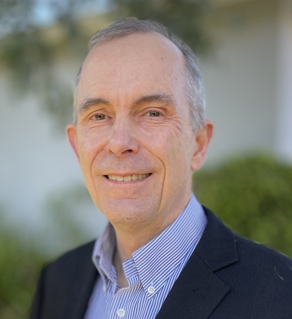
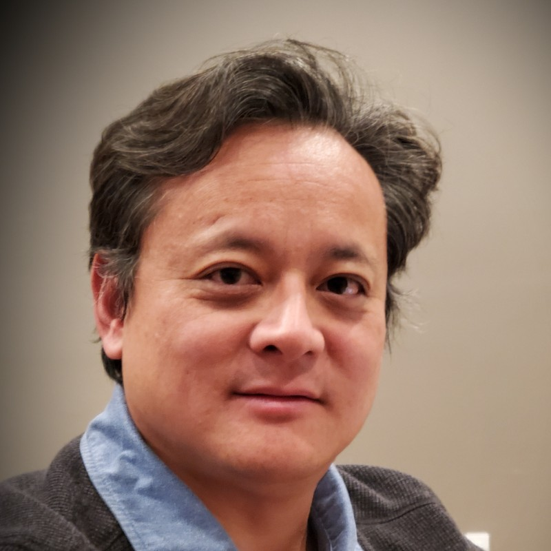
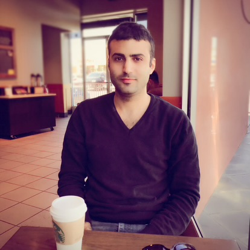

James D. Johansen, PhD
Assistant Professor of Engineering and Computer Sciences
Doctor of Philosophy (PhD) Interdisciplinary Program integrating Theology, Molecular Biology, and Systems Engineering, Liberty University
Master of Science in Electrical Engineering (MSEE), University of Southern California
Bachelor of Science in Electrical Engineering (BSEE), University of Southern California
Master of Arts in Christian Apologetics (MACA), Biola University
Master of Arts in Science and Religion (MASR), Biola University
Experience Record:
Christian University academic experience at several schools: Azusa Pacific University, Liberty University, Regent University, Master’s University, and Biola University.
Extensive industry experience in the aerospace business and work at two federally funded research and development centers (FFRDCs).
LinkedIn: https://www.linkedin.com/in/jim-james-d-johansen-22381281/
Specialty Areas:
Systems Engineering
Electrical Engineering
Applied Systems Engineering toward Biological Systems
Modeling and Simulation
Bio-inspired Design Optimization
Communication Systems
Remote Sensing
Science and Religion
Apologetics
Aerospace Satellite Systems
Publications
Johansen, James D. (2024), “Bacterial chemotaxis control process analysis with SysML,” Systems Engineering, 2023. DOI: https://doi.org/10.1002/sys.21752.
Johansen, James D. (2023) “Human Brain Function Above All Other and the Creation Model,” Proceedings of the International Conference on Creationism: Vol. 9, Article 10. DOI: 10.15385\jpicc.2023.9.1.18. Available at: https://digitalcommons.cedarville.edu/icc_proceedings/vol9/iss1/10.
Johansen, James D. (2020), “Hermeneutic Applications from the Patristic Exegetes,” SHERM 2/2 (2020), 112-41, https://doi.org/10.33929/sherm.2020.vol2.no2.07
Johansen, James D. (2019), “Tracing God's Hand in Redemption: Exploring Evidence of the Imago Dei in Human Molecular Biology,” Liberty University Doctoral Dissertations and Projects. 2189. https://digitalcommons.liberty.edu/doctoral/2189.
Johansen, James. “Applied Theology: Exploring the Utility of Theological Method in Scientific Research with Genomic Research as an Example.” Bartlett, Jonathan. Naturalism and Its Alternatives in Scientific Methodologies: Proceedings of the 2016 Conference on Alternatives to Methodological Naturalism. Broken Arrow, OK: Blyth Institute Press, 2016.
Venturini, Catherine; Abramowitz, Lyle; Johansen, James; Gee, James; Floyd, William (2009), “CubeSat Developmental Programs - Working with the Community,” American Institute of Aeronautics and Astronautics. AIAA Conference Papers, 01/2009.
James Hsi-Jen Yeh, PhD
Biography
James Hsi-Jen Yeh is currently serving as an Assistant Professor of Engineering and Computer Science at Azusa Pacific University. He also taught at the department of Electrical and Computer Engineering, Mechanical Engineering, and Engineering Technology at Cal Poly Pomona. He received his BS degree from Caltech, and his MS and PhD degrees from U.C. Berkeley. He worked for 10 years with fingerprint sensor industry leaders AuthenTec (now Apple) and Validity (now Synaptics) in cellular handset integration. Later generations of the sensors are now included in Apple and Samsung mobile phones. He was a part of the telecommunication
Academic Area
College of Liberal Arts and Sciences
Department of Engineering and Computer Science
Courses Taught
CS 120 - Introduction to Computer Science I
CS 125 - Introduction to Computer Science II
CS 390 - Database Management Systems
Waseem Allie
Biography
Waseem is a senior computer science major at Azusa Pacific University, graduating class of May 2024. He ambitions include getting a job in defense and working on the B-21 Raider and other military planes. He is also one of the current lab techs working on APU's CubeSat program and spends his time programming the Pumpkin Development Board and learning RTOS (real-time operating systems). In his free time he tends to his freshwater aquarium and likes to hang out with his dog Max.
Jovanny Camano
Biography
Jovanny is a senior computer science major at Azusa Pacific University, graduating class of May 2024. His ambitions include getting a job in CyberSecurity or Network Administrator at IBM / Cisco. Currently, he is working part-time at I.T. at APU. During his free time, he enjoys exploring music and watching car-related and tech-related YouTube videos.